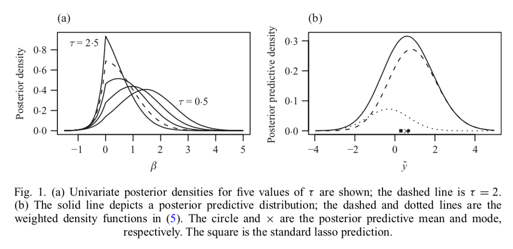

Paper 8 Bayesian lasso regression
(Hans 2009)
8.1 Summary
又是independent Laplace(double-exponential) prior on regression coefficient. > This paper introduces new aspects of the braoder Bayesian treatment of lasso regression. It is shown that the standard lasso prediction method does not neccessarily agree with model-based, Bayesian predictions.
然后再加上new Gibbs sampler.
8.2 Introduction
Lasso introduction \[ \hat{\beta}_{\mathrm{L}}=\operatorname{argmin}_{\beta}(y-X \beta)^{\mathrm{T}}(y-X \beta)+\lambda\|\beta\|_{1} \]
Laplace prior
\[ p(\beta | \tau)=(\tau / 2)^{p} \exp \left(-\tau\|\beta\|_{1}\right) \]
The posterior mode of \(\beta\) is the lasso estimate with penalty \(\lambda=2\tau\sigma^2\).
A new, direct characterization of the posterior distribution \(p(\beta|y,\sigma^2,\tau)\) is introduced, along with a discussion about estimation and prediction under the lasso from a model-based perspective. The Bayesian connection to the lasso is examined, with particular attention paid to the problem of predicting future observation via the posterior prediction distribution. The direct characterization of the posterior is shown to facilitate sampling from the postrior distribution via two new Gibbs samplers that do not require the use of latent variables.
8.3 The Lasso posterior distribution
8.3.1 Direct characterization
Model: \[ \begin{aligned} p\left(y | \beta, \sigma^{2}, \tau\right) &=\mathrm{N}\left(y | X \beta, \sigma^{2} I_{n}\right) \\ p\left(\beta | \tau, \sigma^{2}\right) &=\left(\frac{\tau}{2 \sigma}\right)^{p} \exp \left(\tau \sigma^{-1}\|\beta\|_{1}\right) \end{aligned} \]
This prior retains the property that, for fixed \(\tau\) and \(\sigma^2\), the mode of \(p\left(\beta | y, \sigma^{2}, \tau\right)\) is the lasso estimate with penalty parameter \(\lambda=2 \tau \sigma\).
A direct characterization of the posterior distribution \(p\left(\beta | y, \sigma^{2}, \tau\right)\) does not require the inclusion of latent variables is constructed as follows.
Let \(\mathcal{Z}=\{-1,1\}^{p}\) represent the set of all \(2^p\) possible p-vectors whose elements are \(\pm 1\). For any vector \(z \in \mathcal{Z}\), let \(\mathcal{O}_{z} \subset R^{p}\) represent the corresponding orthant: if \(\beta \in \mathcal{O}_{z}\), then \(\beta_{j} \geqslant 0\) if \(z_{j}=1\) and \(\beta_{j}<0\) if \(z_{j}=-1\).
所以说\(z_j\)是\(\beta\)正负的indicator？这么做有什么意义？orthant是什么意思？象限？这里指什么？j-维空间的元素-》对应\(\beta_j\)和\(z_j\)吗？
Write the density function for the orthant-truncated normal distribution and its associated orthant integrals as \[ \mathrm{N}^{[z]}(\beta | m, S) \equiv \frac{\mathrm{N}(\beta | m, S)}{\mathrm{P}(z, m, S)} 1\left(\beta \in \mathcal{O}_{z}\right), \quad \mathrm{P}(z, m, S)=\int_{\mathcal{O}_{z}} \mathrm{N}(t | m, S) d t \]
Applying Bayes’ theorem to the lasso regression model, the posterior distribution is orthant-wise Gaussian, \[ p\left(\beta | y, \sigma^{2}, \tau\right)=\sum_{z \in \mathcal{Z}} \omega_{z} \mathrm{N}^{[z]}\left(\beta | \mu_{z}, \Sigma\right) \] i.e. a collection of \(2^p\) different normal distributions that are each restricted to a different orthant.
所以这个象限确实是象限的意思看来。。。因为每个维度（数轴）由正负分成两个象限，然后这几个象限两两组合，所以\(2^p\) 个不同的象限
The covariance structure in each of the \(2^p\) orthants is the same, \(\Sigma=\sigma^{2}\left(X^{\mathrm{T}} X\right)^{-1}\), whereas the location parameters depend on the orthants: \(\mu_{z}=\hat{\beta}_{\mathrm{OLS}}-\tau \sigma^{-1} \Sigma z\), where \(\hat{\beta}_{\mathrm{O} \mathrm{L} \mathrm{S}}=\left(X^{\mathrm{T}} X\right)^{-1} X^{\mathrm{T}} y\). The normalized weight for each orthant is
\[ \omega_{z}=\left\{\frac{\mathrm{P}\left(z, \mu_{z}, \Sigma\right)}{\mathrm{N}\left(0 | \mu_{z}, \Sigma\right)}\right\} /\left\{\sum_{z \in \mathcal{Z}} \frac{\mathrm{P}\left(z, \mu_{z}, \Sigma\right)}{\mathrm{N}\left(0 | \mu_{z}, \Sigma\right)}\right\} \] Classic lasso prior has the similar posterior, the only change is that the location parameters become \(\mu_{z}=\hat{\beta}_{\mathrm{ous}}-\tau \Sigma z\).
感觉这个想法很牛逼但是没搞懂为啥要这么做。。。。基于orthant的分布, orthant-truncated normal distribution
如果可以计算multivariate normal orthant integrals, 后验分布可以被积出来或者sample出来当p很小的时候，那么久可以直接得到后验的inference，然后估计\(\sigma^2,\tau\)的后验均值。对于很大的p，后验估计可以通过MCMC搞定。
\(\sigma^{-2} \sim \operatorname{Ga}(a, b)\),\(\tau \sim \operatorname{Ga}(r, s)\).
8.3.2 Posterior-based estimation and prediction
Strictly speaking, when \(\beta \in R^{p}\), this interpretation is not correct: under this loss function, the expected posterior loss is equal to one for all \(b \in R^{p}\) and so any point \(b \in R^{p}\) is a suitable \(\hat b\). The posterior mode can, though, be interpreted as the limit of a sequence of Bayes rules. The posterior mode can, though, be interpreted as the limit of a sequence of Bayes rules. Consider the sequence of loss functions \(l_{\varepsilon}(b, \beta)=1-1\left\{\beta \in B_{\varepsilon(b)}\right\}\), where the indicator function equals one if an \(\epsilon-\)ball centred at \(b\) contains \(\beta\) and is zero otherwise. In the limit as \(\epsilon \rightarrow 0\), the sequence of Bayes-optimal estimators \(\hat{b}_{\varepsilon}\) converges to the posterior mode.
这一段没懂，怎么就和0-1损失函数等价了，而且对于\(\beta\in R^p\) 为啥不成立，而且这个sequence的loss function是什么意思？要去看Bernardo&Smith,2000,pp. 257-258吗。。
给定\(\beta\)的点估计\(\hat\beta\),接下来要考虑的问题就是预测问题\(\tilde y\) with given new value \(\tilde X\),是\(\tilde X\hat \beta\).而对于贝尔意思问题，就是考虑y的边际分布\(p\left(\tilde{y} | y, \sigma^{2}, \tau\right)=\int p\left(\tilde{y} | y, \beta, \sigma^{2}, \tau\right) p\left(\beta | y, \sigma^{2}, \tau\right) d \beta\). 对于回归问题，posterior predictive mean is \(E\left(\tilde{y} | y, \sigma^{2}, \tau\right)=\tilde{X} E\left(\beta | y, \sigma^{2}, \tau\right)\). 所以posterior mean同时可以促进点估计和预测。（Bayes 后验这套对参数的点估计和预测都有用？） 而对于0-1损失函数这套不成立，后验估计分布的最高点不一定是\(\tilde{X} \hat{\beta}_{\mathrm{L}}\). 最基础的lasso预测，如果预测是在一列0-1损失函数上得出的，需要使用数值优化方法极大化\(p\left(\tilde{y} | y, \sigma^{2}, \tau\right)\).
8.3.3 The univariate case.
Pericchi & Smith (1992)引进了\(\beta\)的一种后验估计方法，单变量，intercept only， normal mean. For fixed \(\sigma^2\) and \(\tau\), the univariate posterior is \[ p\left(\beta | y, \sigma^{2}, \tau\right)=w \mathrm{N}^{-}\left(\beta | \mu_{-}, v^{2}\right)+(1-w) \mathrm{N}^{+}\left(\beta | \mu_{+}, v^{2}\right) \] where \(N^{-}\) and \(N^+\) correspond to \(N^{[z]}\) for \(z=-1\) and \(z=1\),respectively. The common scale term is \(v^{2}=\sigma^{2}\left(x^{\mathrm{T}} x\right)^{-1}\), and the two location parameters are \(\mu_{+}=\hat{\beta}_{\mathrm{ols}}-\tau \sigma^{-1} v^{2}\) and \(\mu_{-}=\hat{\beta}_{\mathrm{ols}}+\tau \sigma^{-1} v^{2}\). The weight is
\[ w=\frac{\Phi\left(\frac{-\mu_{-}}{v}\right) / \mathrm{N}\left(0 | \mu_{-}, v^{2}\right)}{\Phi\left(\frac{-\mu_{-}}{v}\right) / \mathrm{N}\left(0 | \mu_{-}, v^{2}\right)+\Phi\left(\frac{\mu_{+}}{v}\right) / \mathrm{N}\left(0 | \mu_{+}, v^{2}\right)} \] where \(\Phi(\cdot)\) is the standard normal cumulative distribution function. \[ E\left(\beta | y, \sigma^{2}, \tau\right)=\hat{\beta}_{\mathrm{OLS}}+\tau \sigma^{-1} v^{2}\{w-(1-w) \} \] denote as \(\hat\beta_B\).Because \(-1 \leqslant w-(1-w) \leqslant 1\), the effect of the prior on the posterior mean relative to the least-squares estimate is bounded, \(\left|\hat{\beta}_{\mathrm{B}}-\hat{\beta}_{\mathrm{O} \mathrm{LS}}\right| \leqslant \tau \sigma\left(x^{\mathrm{T}} x\right)^{-1}\), and the bound is controlled by the amount of penalization.
\[ p\left(\tilde{y} | y, \sigma^{2}, \tau\right)=w\left\{\frac{\Phi\left(\frac{-\tilde{\mu}_{-}}{\tilde{v}}\right)}{\Phi\left(\frac{-\mu_{-}}{v}\right)} \mathrm{N}\left(\tilde{y} | \tilde{x} \mu_{-}, \tilde{\sigma}^{2}\right)\right\}+(1-w)\left\{\frac{\Phi\left(\frac{\tilde{\mu}_{+}}{\tilde{v}}\right)}{\Phi\left(\frac{\mu_{+}}{v}\right)} \mathrm{N}\left(\tilde{y} | \tilde{x} \mu_{+}, \tilde{\sigma}^{2}\right)\right\} \] where \(\tilde{v}^{2}=v^{2} /\left\{1+\tilde{x}^{2} /\left(x^{\mathrm{T}} x\right)\right\}, \tilde{\sigma}^{2}=\sigma^{2}\left\{1+\tilde{x}^{2} /\left(x^{\mathrm{T}} x\right)\right\}\). and \[ \tilde{\mu}_{+}=\left(\frac{\tilde{x} \tilde{y}+x^{\mathrm{T}} y-\sigma \tau}{\tilde{x}^{2}+x^{\mathrm{T}} x}\right), \quad \tilde{\mu}_{-}=\left(\frac{\tilde{x} \tilde{y}+x^{\mathrm{T}} y+\sigma \tau}{\tilde{x}^{2}+x^{\mathrm{T}} x}\right) \]

8.4 Posterior Inference via Gibbs sampling
8.4.1 The standard Gibbs sampler.
Update each parameter one at a time, conditionally on all other parameters. The full conditional distributions with details as
\[ \begin{aligned} p\left(\beta_{j} | \beta_{-j}, \sigma^{2}, \tau, y\right) &=\phi_{j} \mathrm{N}^{+}\left(\beta_{j} | \mu_{j .}^{+}, \omega_{j j}^{-1}\right)+\left(1-\phi_{j}\right) \mathrm{N}^{-}\left(\beta_{j} | \mu_{j .}^{-}, \omega_{j j}^{-1}\right) \\ p\left(\sigma^{2} | \beta, \tau, y\right) & \propto\left(\sigma^{2}\right)^{-\left(a^{*}+1\right)} \exp \left(-b^{*} / \sigma^{2}-\tau\|\beta\|_{1} / \sigma\right) \\ p\left(\tau | \beta, \sigma^{2}, y\right) &=\mathrm{Ga}\left(\tau | p+r, \sigma^{-1}\|\beta\|_{1}+s\right) \end{aligned} \] with parameter: \(a^{*}=(n+p) / 2+a\),\(b^{*}=(y-X \beta)^{\mathrm{T}}(y-X \beta) / 2+b\), \[ \mu_{j .}^{+}=\hat{\beta}_{\mathrm{OLS}, j}+\left\{\sum_{i \neq j}\left(\hat{\beta}_{\mathrm{OLS}, i}-\beta_{i}\right)\left(\omega_{i j} / \omega_{j j}\right)\right\}+\left(-\tau \sigma^{-1} \omega_{j j}^{-1}\right) \] \(w_{ij}\) is the ijth element of \(\Omega=\Sigma^{-1}\).The weights are \[ \phi_{j}=\left\{\frac{\Phi\left(\mu_{j}^{+} \cdot \sqrt{\omega}_{j j}\right)}{\mathrm{N}\left(0 | \mu_{j}^{+}, \omega_{j j}^{-1}\right)}\right\} /\left\{\frac{\Phi\left(\mu_{j}^{+} \vee \omega_{j j}\right)}{\mathrm{N}\left(0 | \mu_{j}^{+}, \omega_{j j}^{-1}\right)}+\frac{\Phi\left(-\mu_{j}^{-} \vee \omega_{j j}\right)}{\mathrm{N}\left(0 | \mu_{j}^{-}, \omega_{j j}^{-1}\right)}\right\} \]
A description of a simple and efficient reject sampling method for obtaining exact samples from \(\sigma^2\) is provided in the Appendix.
When predictor variables are highly correlated, autocorrelation in the chain can be high. The usual solution of block-updating is not feasible because \(p\left(\beta | \sigma^{2}, \tau, y\right)\) is difficult to sample when \(p\) is even moderately large.
注意到full conditional distribution里面，\(\beta_j\) conditional on \(\beta_{-j}\).
in 3.2, where a new Gibbs sampler is proposed that uses a reparameterization of the model to reduce autocorrelation. Even in the case of high autocorrelation, accurate estimates of the posterior mean of the regression coefficients can often be obtained under the standard Gibbs sampler via Rao-Blackwellization; at each iteration, the conditional expectation of \(\beta_j\) is simply
\[ E\left(\beta_{j} | \beta_{-j}, \sigma^{2}, \tau, y\right)=\phi_{j}\left\{\mu_{j .}^{+}+\frac{\mathrm{N}\left(0 | \mu_{j}^{+}, \omega_{j j}^{-1}\right)}{\Phi\left(\mu_{j}^{+} \cdot \sqrt{\omega_{j j}}\right)}\right\}+\left(1-\phi_{j}\right)\left\{\mu_{j .}^{-}-\frac{\mathrm{N}\left(0 | \mu_{j}^{-}, \omega_{j j}^{-1}\right)}{\Phi\left(-\mu_{j}^{-} \cdot \sqrt{\omega_{j j}}\right)}\right\} \] .
If the classic lasso prior is used in place, then the Gibbs for \(\sigma^2\) and \(\tau\) are replaced by \[ \begin{aligned} p\left(\sigma^{2} | \beta, \tau, y\right) &=\operatorname{IG}\left(\sigma^{2} | a+n / 2, b^{*}\right) \\ p\left(\tau | \beta, \sigma^{2}, y\right) &=\mathrm{Ga}\left(\tau | p+r,\|\beta\|_{1}+s\right) \end{aligned} \]
这块不懂，得手推一下才能懂
8.4.2 The orthogonalized Gibbs sampler
A Gibbs sampler that is less sensitive to collinearity in the design matrix can be constructed as follows: Using the idea of ortogonally.
Let \(\Sigma=\sigma^{2}\left(X^{\mathrm{T}} X\right)^{-1}\) according to \(\sigma^{2} H^{\mathrm{T}}\left(X^{\mathrm{T}} X\right)^{-1} H=\sigma^{2} \Lambda=\sigma^{2} \operatorname{diag}\left(\lambda_{j}\right)\), where H is a \(p\times p\) matrix such that \(H^{\mathrm{T}} H=H H^{\mathrm{T}}=I_{p}\). Transforming the regression coefficients as \(\eta=H^{\mathrm{T}} \beta\),
\[ p\left(\eta | y, \sigma^{2}, \tau\right) \propto \sum_{z \in \mathcal{Z}} \frac{\mathrm{N}\left(\eta | H^{\mathrm{T}} \mu_{z}, \sigma^{2} \Lambda\right)}{\mathrm{N}\left(0 | \mu_{z}, \Sigma\right)} 1\left(H \eta \in \mathcal{O}_{z}\right) \]
Each element of the sum contains a term \(\mathrm{N}\left(\eta | H^{\mathrm{T}} \mu_{z}, \sigma^{2} \Lambda\right) 1\left(H \eta \in \mathcal{O}_{z}\right)\), a normal distribution with diagonal covariance matrix and support restricted by linear constraints.
这段没懂，大概的意思是用一个H矩阵转换一下？
While this distribution of \(\eta\) is difficult to sample, then the full conditionals are piecewise normal on the intervals \(h_{0, j}^{*}<\cdots<h_{p+1, j}^{*} :\)
\[ p\left(\eta_{j} | \eta_{-j}, \sigma^{2}, \tau, y\right)=\sum_{l=0}^{p} \rho_{l j}\left\{C_{l j}^{-1} \mathrm{N}\left(\eta_{j} | \xi_{l j}, \sigma^{2} \lambda_{j}\right) 1\left(h_{l, j}^{*} \leqslant \eta_{j}<h_{l+1, j}^{*}\right)\right\} \]
为什么成立。。。这个piecewise normal on the intervals.
8.4.3 Comparing samplers
Each of the three Gibbs samplers for this model has advantages and disadvantages.
哪里来的三个！？ 一个传统Laplace prior，一个2008那个的prior，还有一个正交的？是这三个吗？
The data-augmentation approach is simple to implement and performs a block update for the regression coefficients \(\beta\), but involves a vector of latent variables which may result in slower mixing of the chain.
哦原来是这个，文中一开始提出的那个带正负号indicator的latent variable \(z\) 的那个Gibbs sampler
The standard Gibbs sampler describe above is also simple to implement, but its mixing properties are particularly sensitive to correlation among the predictor variables.
就是在讲orthogonalized之前那个，就是最普通的Gibbs sampler？
The orthogonalized sampler is designed to reduce autocorrelation in such cases, but this reduction comes with an increase in both algorithmic complexity and computing time for a fixed number of iterations.
所以正交方法很复杂然后带来了额外的计算和额外的迭代？
然后就是Efron的diabetes data, illustrate the trade-offs between the data-augmentation and orthogonalized samplers.data-augumentation的是最简单的模型，orthogonalized则是代表了最复杂的模型。两个抽样器都分别跑了100 000次。然后分析\(\tau\) 和 \(\beta_5\).
既然Gibbs都要100 000次，那么Random walk跑1 000 000次一点都不多吧orz
因为\(\beta_5\)对应着一个和其他predictor 高度相关的predictor。 lag-1 自回归系数：0.31对于第一个模型，0.08对于orthogonalized方法。 对于\(\tau\) 则是0.74和0.13.所以虽然data-augumented Gibbs是一块一块更新\(\beta\)的，但是orthogonalized sampler还是有更低的自相关性。
但是orthogonalized sampler对于scale更敏感，加了40个白噪声predictor时，orthogonalized sampler要多跑20倍的时间。解决这个问题的一个策略是对于large-p，把\(\beta\)分成两部分，一个是两两不怎么相关的predictor，一个是有复杂相关关系的结构，第一个则每次更新一个，第二个几何则应用orthogonalizing transformation。
8.5 Examples
8.5.1 Example1:Prediction along the solution path
The solution path is indexed by \(s=\left\|\hat{\beta}_{\mathrm{L}}(\lambda)\right\|_{1} /\left\|\hat{\beta}_{\mathrm{OLS}}\right\|_{1} \in[0,1]\) corresponding to the fraction of the \(L_1\) norm of the least-squares estimate represnete by the lasso estimate at \(\lambda\).
所以从这段来看The solution path就是那个关于latent variable\(\lambda\)的图上的solution
Large values of \(\lambda\) represent high shrinkage and hence correspond to small values of \(s\)
Along the path at \(l=1,...,50\), evenly space values in \([0,1]\), the corresponding penalty parameters \(\lambda_l\) were determined. The lasso estimate at each value of \(\lambda_l\) corresponds to the mode of the posterior distribution under piror with \(\tau=\lambda_{l} /\left(2 \sigma^{2}\right)\). Where \(\sigma^2\) was fixed at an estimate based on a least-squares fit of the full model.
8.5.2 Example2: Prediction when modelling \(\lambda\)
Several methods for choosing \(\lambda\):
- K-fold and generalized cross-validation
- \(C_p\)-type selection
- Empirical Bayes approach.
Using 10-fold crossvalidation on the training data. Prediction error was calculated using the test data.
We repeated this procedure T=10000 times.
所以每次Bayes抽100000次，然后重复这个过程在10-fold cv，所以是10^6,然后再反复repeat 10000次，所以要重复10^10次抽样？
8.6 Discussion
- Better than standard lasso.
- Similar result
- Reduction in average prediction error of 16%,36%,19%
References
Hans, Chris. 2009. “Bayesian lasso regression.” Biometrika 96 (4): 835–45.